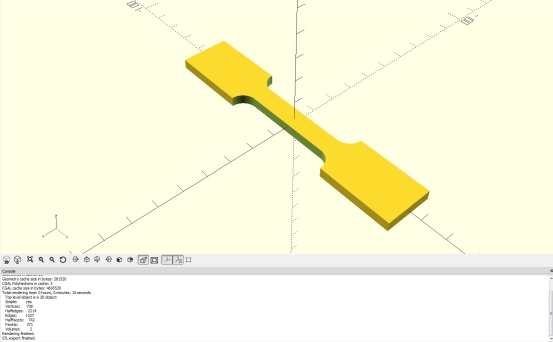
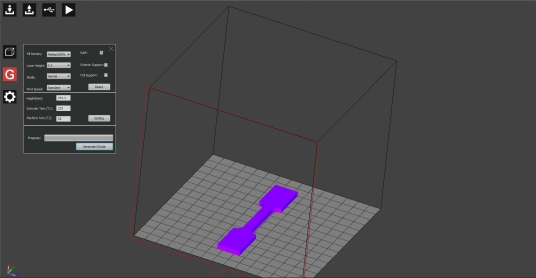
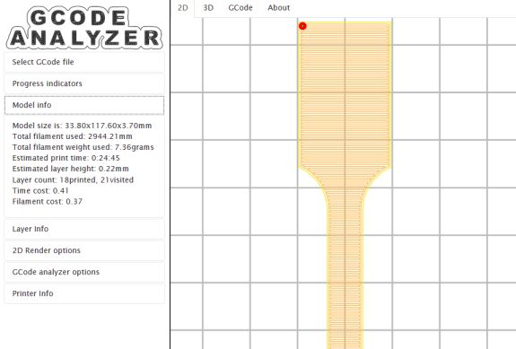
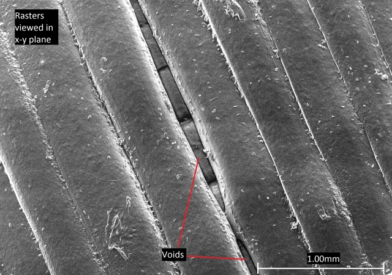
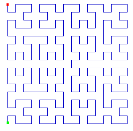

The original, as published: DoITPoMS, University of Cambridge, Additive Manufacturing. CC BY-NC-SA 4.0, https://creativecommons.org/licenses/by-nc-sa/4.0/. Imported as published, from https://www.doitpoms.ac.uk/tlplib/add_manuf/ https://www.doitpoms.ac.uk/tlplib/add_manuf/
Additive manufacturing (AM) refers to a number of processes where objects, commonly designed in 3D computer software (Computer Aided Design or CAD), are formed by the addition of material, usually layer by layer.
Traditionally, objects are often made by a material being cut down and/or shaped in a series of manufacturing steps. Additive manufacturing is the polar opposite and, instead, products are made solely by the addition of material. This allows for complex shapes to be formed that would otherwise be impossible or hard to produce, allowing design to be more flexible. For example, shapes that would have needed multiple sections to be joined, such as hollow shapes, can now be printed. By removing the need for joins, printed objects avoid potentially weaker sections that arise from joining methods. In addition, AM has benefits for pre-production, allowing for scale models to be produced quickly and with little cost. This is commonly referred to as Rapid Prototyping.
AM is often known as 3D printing. However, specifically, 3D printing is just one type of AM, referring generally to methods in which material is deposited in layers by a nozzle. This isn’t the case for all AM methods.
Production of any AM build must go through a series of steps, listed below. These are:
(Gibson, Additive manufacturing technologies)
CAD, or Computer Aided Design, is any software that allows a designer to quickly produce 3D models of an object. An example image of CAD software is shown below.

Screenshot of OpenSCAD CAD software, used to design a dog-bone tensile test sample
These 3D models are useless to a printer, however, as they only describe a geometrical shape. A printer must be given instructions a layer at a time to print the model. Therefore, the next step is to convert the model into a series of cross sections using a “slicer”. A slicer is software that breaks down 3D models into a series of 2D cross sections in a process known as “slicing”. Slicing software can also automatically generate support structures that are needed for a print. Options will be available to change properties to the print, such as print speed and layer thickness.

Slicing software, DoraWare. Slicer about to generate code to produce dog-bone tensile test sample.
Once this is done, the slicer can export code as a series of instructions to the printer that tells the printer the movements needed to print each layer. Now, given step by step by step instructions, the printer will execute each step and print the model. These instructions can be viewed in software such as GCode viewer (GCode being the code used to instruct a printer, action by action).

GCode viewer (http://gcode.ws/ showing how the printer will print a specific layer of a tensile test sample
The video below shows a printer in action, printing the tensile test sample. To increase the likelihood of a successful print, the slicing software has added a “raft” support structure. This will be the first thing printed onto the print bed. 1st layers have a habit of being uneven or not sticking to the print bed well. Rafts counteract this, helping the print stay grounded as they connect to the bed over a large area.
Video of fused deposition modelling printer printing dog-bone test sample with a 'raft' for support.
However, the manufacturing isn’t complete. Most prints require further steps after printing, known as post-processing, before being ready for use. Commonly, this involves the removal of support structures(additional structures printed that support the object as it’s printed) and potential smoothing of surfaces, as prints can have poor surface finish.
How the printing is done and necessary post-processing can vary depending on printer type. The following sections describe and explore the benefits and weaknesses of various AM methods currently used in industry with a focus on polymer AM.
When considering resolution, there are a few important distinctions to make. Due to the nature of the printing process, resolution horizontally (aka. the x-y plane) and vertically (z direction) are different and determined by separate effects. These are then also different from the finest detail possible on a printer.
Printing resolution in the x-y plane is limited by the minimum distance the nozzle or laser of a printer can move (with the exception of DLP where resolution depends on pixel size), while in the z direction, it’s limited by layer thickness. The smaller each of these values, the better the resolution. Resolution will determine the accuracy of the edges of a printed object, allowing for finer increments in, for example, a curved surface.
In the diagram below, shapes b)-e) are trying to recreate the shape in a) with varying resolution. Starting from b), the print is limited in print quality by the x-y and z resolution, hence, doubling resolution in the x-y plane or z has no effect on the overall accuracy of the print as accuracy will be limited by the other unchanged resolution. Only by doubling resolution in x-y and z will improve accuracy.
Diagram showing how overall accuracy varies with resolution in x-y plane and z direction. Yellow lines show minimum movement in a direction.
Therefore, it can be seen high resolution in both the x-y plane and z direction are needed to produce accurate and smooth prints. However, smaller layer thickness (so better z resolution) isn’t necessarily always better. Thinner layers also means more layers and, therefore, more chance for a defect or printing error to occur with little improvement to the smoothness of a surface. This is clear if comparing a sloped surface with increasing z resolution and a vertical surface with increasing z resolution. Thinner layers in the vertical surface will have no improvement in the print while the slope would see improvement (assuming z resolution is the limiting factor for overall resolution). Layer thickness can also affect properties in adverse ways. The exact effect that changing layer thickness has on properties such as strength can be quite complex and won’t be discussed here.
Finest detail (also known as minimum feature size) is a measure of the smallest section of an object able to be made by the printer. The smaller the finest detail, the better. Finest detail is generally limited by either nozzle diameter or laser spot size. Details smaller than these values cannot be printed as the printer is physically unable to produce lines that small. However, practically, other factors may effect this. For example, due to the heat of melted plastic from FDM printers, thin sections can fail due to softening from the heat.
Typically, print quality is most limited by z resolution and the minimum feature size (as x-y resolution is usually high for printers). For best quality, careful selection of layer thickness and small minimum feature size is needed.
Photopolymerisation involves the use of photopolymers - a polymer that changes properties when exposed to light. For the case of photopolymerisation, exposure to visible or UV light initiates polymerisation or cross linking reactions, “curing” the polymer. . This can be achieved by using specific monomers and oligomers, or by the addition of photoinitiators that become reactive species that initiate polymerisation when exposed to certain frequencies of EM radiation. Currently, available photopolymers are very limited.
Photopolymerisation reactions are exploited for a variety of additive manufacturing methods, the first of which is Stereolithography. SLA uses a vat of liquid photopolymer (shown as yellow in the animation below) with a laser, allowing selective and local solidification the liquid. A platform in the vat is slowly lowered as the laser moves across the surface of the liquid, curing the polymer a layer at a time. In some cases, a blade passes over the surface of each layer to produce a smooth surface for the next layer to build on. Once the object is completed, excess polymer is drained away.
Another process is Digital Light Processing (DLP) which is very similar to SLA, but instead of curing with a laser, the photopolymer is cured with a projector that projects the image of the desired layer onto the liquid surface.
Generally, DLP is faster than SLA but with lower resolution in the x-y plane and worse surface finish. This is due to the DLP having a certain minimum pixel size, so any edge will therefore have its accuracy and resolution limited by the size of these pixels. In SLA, however, the laser can be pointed at a given x-y coordinate. The laser can then be moved to produce accurate and precise edges and shapes due to the fine control a printer usually has over laser positioning. This is true even if the laser point is larger than the pixel size.
Post-processing is needed for both DLP and SLA. This involves removal of support structures, smoothing and, potentially, further curing for increased hardness. It is also worth noting that some SLA and DLP machines have platforms that rise upwards rather than downwards, with the projector or laser under the liquid.
Unlike most other additive manufacturing processes, SLA and DLP are able to produce isotropic properties. This is because, when initially curing a layer, the plastic is only partially reacted, known as a green state, where there are still monomers and oligomers available for reaction on the layer surface. . As the next layer is cured, the polymerisation reaction involves the previous layer, chemically bonding the two layers.
A further advantage is DLP and SLA printers generally have much higher resolution and smaller minimum feature sizes than other AM methods.
However, the two methods are both limited by the fact that you can't print fully closed hollow sections as they will be filled with liquid. The design would therefore need drainage holes to avoid this.
Print times can take a long time, especially for SLA. For comparison, a print which may take 2-3 hours for other methods (FDM or SLS ), may take upwards of 11 hours for SLA. Despite each layer being made quickly, layers are often very thin in SLA meaning many more layers are needed for SLA and DLP than FDM (see material extrusion section for more on FDM printers).
Cost for SLA and DLP is also high, with the printers themselves being far more expensive at desktop and industrial scales than other methods. The plastic used is also more expensive with 1 kg of photopolymer resin costing around between £50-120 compared to that of 1 kg of PLA plastic filament used for FDM being roughly £20-50.
Finally, both methods are limited by the material properties of the plastic used. The nature of the plastic means prints are brittle and are susceptible to creep, meaning they are not suitable to be used as functional parts nor used over longer periods of time. There is some control over properties, however, by further curing the print to harden and strengthen the object if needs be.
Material jetting also uses photopolymers, but instead of a vat, MJ jets droplets of material layer by layer from a nozzle onto the build surface in a similar fashion to 2D ink jet printers.
Initially, the liquid is heated to roughly 30-60°C to reach an optimum viscosity for jetting the liquid. The print head travels over the build surface, depositing droplets of liquid. The material is then cured by a UV light to solidify and harden the photopolymer. This process is repeated layer by layer. Deposition of droplets in this way results in less waste than either SLA or DLP.
MJ requires support structures for any overhangs and usually doesn’t require post curing, unlike SLA, due to smaller layer heights.
Potentially the largest attraction to MJ is that multiple nozzles can be set up which then jet different plastics (of different colourings of plastic) to either give different properties or colour to different sections of a print. Different colourings can also be mixed to give specific hues. In addition, it’s common for support structures to be made from a secondary dissolvable material that can be removed by either pressurised water or an ultrasonic bath. Dissolvable support structures like this can leave no mark once removed, maintaining high quality surface finish.
Other benefits include lower waste than SLA or DLP due to using jetted droplets rather than a vat (as mentioned earlier). Also, print quality is very high, meaning MJ has very smooth surface finishes and dimensionally accurate prints.
MJ shares some of the same disadvantages as SLA and DLP, such as the properties of the plastic making it unsuitable for many applications due to the brittle nature of printed objects. Polymers used are also photosensitive and break down over time and, finally, printing is expensive.
Powder bed fusion (PBF) refers to a number of methods where, common for each process, material powder is heated in a chamber and fused a layer at a time. Once a layer is formed, the build platform is lowered by an amount equal to one layer and new powder is spread over previous layers either by a blade or roller. For the case of polymer AM, there are two common methods of powder bed fusion - Selective Laser Sintering (SLS) and Multi Jet Fusion (MJF).
SLS is analogous to SLA, using a moveable laser to selectively sinter polymer powder in layers. Initially, a thin layer of powder covers a platform inside a chamber. The chamber is held just under the melting point of the polymer so that when a laser is applied, the powder begins to melt, sintering and fusing together.
MJF, instead of using a laser, uses nozzles to drop a “binding agent” onto the surface of the powder bed. Just like MJ, this is done in a similar way to how 2D printers jet ink. Additional agents can be added to help define boundaries or give specific colour to individual voxels (a 3D pixel). However, currently, the choice of colour is limited. The binding agents will define whether a voxel is part of the structure or will remain as powder. The agents have high absorption of IR radiation, so after the agents are jetted, an IR light passes over the powder bed to locally heat the powder in locationscontaining the binding agent, causing the powder to melt and fuse.
Post processing is minimal, unlike other AM methods which require the removal of support structures, and mainly consists of cleaning excess powder.
The main benefit of PBF is that there is no need for support structures, as the surrounding powder supports the forming object, enabling more design options to manufacturers. This links to a second benefit, which is that as no material is wasted on support structures and, as powder is reusable, little waste is produced.
MJF specifically can more easily and quickly produce a larger number of objects at once by utilising the entire print volume. While it can’t match injection moulding for high volumes of objects, at low volume production, MJF is cost equivalent.
PBF processes have a number of downsides. Both methods result in rough surface finishes, with roughness depending on powder particle size (but almost no visible layer lines as an upside). This is because powder particles at the edge of a voxel that are being heated by a laser or IR radiation have a reasonable chance to partially sinter, binding to the surface of the desired shape.
The choices of material available to SLS and MJF are mostly limited to various nylons, in turn limiting properties. Printed objects also tend to be fairly weak, reducing the potential uses of any printed object.
All the PBF methods are also very energy intensive. This is due to having to keep the powder in a heated chamber (so the polymer melts readily when more heat is applied) which must be reheated for each print. This can lead to further problems such as potentially affecting unused powder in the chamber, rendering it unusable. Also, as the prints experience heating and cooling, it is possible for prints to warp.
Finally, similarly to the vat photopolymerisation methods, hollow shapes cannot be formed as powder would be unable to drain away in an enclosed shape.
Material extrusion AM methods operate under the principal of using a nozzle to extrude and eject hot plastic onto a build surface. There are two slightly varying methods of material extrusion which are Fused Deposition Modelling (FDM) and Arburg Plastic Freeforming (APF) (translated from the German name - Arburg Kunststoff Freiformen).
FDM is what most people imagine as 3D printing due to being the most common type of additive manufacturing, mainly due to its low cost making it accessible to industry and hobbyists. It also has a relatively large selection of materials available to use, as numerous thermoplastics can be printed using FDM. The most common plastics used are ABS and PLA.
FDM uses a spool of plastic that feeds a thread of plastic (known as a filament) through a nozzle. The nozzle is on a print head which has the operation of mechanically forcing the filament through the print head in a cold section, then heating and melting the plastic in a hot section before extruding the plastic through the nozzle. Now melted and extruded, the plastic is printed directly onto the surface of a build in a continuous stream. The print nozzle moves in the x-y plane to control where the plastic is placed. Once the layer is completed, the platform the object is on can move downwards in the z direction by a small amount for the next layer to be built.
As the deposited plastic is hot, it is able to fuse to layers below, softening and binding to the surface of the previous layer. This leads to anisotropic properties as this fuse is weaker than the extruded thread of material, meaning printed objects are generally weaker in the z-direction. For more on anisotropy in FDM, see the properties of FDM section
APF works similarly to FDM with a few notable differences. The first of which is that the plastic supplied is in pellets. These melted pellets are then forced along to a nozzle using a rotating screw, similar to injection moulding. Once in the nozzle, the nozzle periodically opens and closes, letting out individual droplets of melted plastic onto the build surface.. The platform being printed on can move in the xyz directions to control where the droplets are placed. Droplet size can be controlled by changing the nozzle diameter.
APF and FDM usually print onto a hot surface (the exact temperature may depend on the plastic being used) to reduce warping (plastic can warp due to shrinkage on rapid cooling), and give better adhesion between the print and print bed.
Both process need support structures, so post processing mostly involves the removal of these structures. Some more advanced printers are able to print multiple plastics at once so support structures can be printed in a material, such as PVA, that can be easily removed (usually using water). Further post processing can involve smoothing the surface of the object as especially FDM can give poor surface finish, however surface finish can vary quite a lot between printer models.
As mentioned earlier, material extrusion (or specifically FDM) printing is cheap and widely accessible. The common plastics used are also cheap meaning FDM is ideal for amateurs.
Also mentioned earlier, material extrusion has many plastics available to it, including polymers infused with other materials. This enables more choice over properties, with each polymer having its own pros and cons when used to print.
On the other hand, material extrusion can suffer from lower resolution and worse quality prints than photopolymerisation or PBF processes. Surface finishes are bumpy with usually easily visible layer lines. This can lead to more time post processing to achieve a smooth surface.
Binding between layers can be poor, especially for some polymers. To explain what this means for the print, read the Properties of FDM section.
Print failure can also be quite common. This is a problem for all AM methods, but FDM is susceptible to quite a few potential faults in printing e.g. fast heating then cooling of plastic can lead to thermal contraction as the object is printed, resulting in the print warping. For more on problems that can occur during printing, you can read this article: https://all3dp.com/1/common-3d-printing-problems-troubleshooting-3d-printer-issues/.
Additive manufacturing methods currently struggle with recreating the mechanical properties of parts made by traditional production methods, such as injection moulding. This section explores the material properties of FDM prints and what may be causing these properties.
Fundamental to understanding the properties of FDM prints is understanding how the printed lines of plastic (an individual line also being known as a raster) bond together. Bonding is caused when hot plastic is ejected from the nozzle and is applied to the print surface, partially melting neighbouring plastic and entangling polymer chains. The strength of the bond can be modelled as a temperature-dependant diffusion model, where greater temperature for a longer time results in greater diffusion and, subsequently, greater entanglement. The processes of entangling like this can be referred to as the plastic adhering to itself.
This method of bonding has a of couple problems. Firstly, the extent of entanglement of chains will be far less between rasters than within rasters. Less entanglement means less force is required to break apart the chains so the bonding is weaker. The second problem is that gaps, known as voids, can form and reduce the overall cross-sectional area that contributes to the strength of a build. Voids develop due to the nature of the geometry of the rasters and layers which, when stacked in a print, leave holes from inefficient packing. In addition, printing errors can mean rasters or layers don’t fully adhere, also creating voids between lines. The colder a neighbouring line of plastic is to the one being printed, the more likely the bonding between lines will be weaker, with a greater chance of void formation.
Diagram showing section of printed FDM lines with voids from lack of full adhesion and line geometry
The result is that strength parallel to a set of printed lines is high, while perpendicular is weak (so is anisotropic), with values depending on polymer strength and the extent of adhesion between rasters and layers.
To combat anisotropy in the x-y plane, FDM printers print specific structures that have the same strength in both x and y by increasing the strength of one direction while decreasing it in the other. A common structure would be a crosshatch pattern with roughly half the material pointing in the x direction, and half in the y, meaning each direction has equal amounts of the strength from rasters parallel to that direction, and the weak bonding from rasters perpendicular.
Diagram showing rasters printed in alternating directions parallel to x and y. No lines are drawn vertically in z direction
Below is an SEM picture of an FDM printed sample, showing voids that have formed between between rasters. Also seen through the void is the layer below, which is pointing perpendicular to the viewed top layer.

SEM picture of an FDM print. A void can be seen in the top layer. Through the void, rasters of the layer below can be seen pointing perpendicular to the top layer.
It is worth noting is that most printers aren’t made to produce objects that are 100% filled with plastic. Instead, a printer will print the outside of a layer as a solid line, and then fill in the gaps in the centre with a predetermined “infill pattern” so a specific percentage of the area inside is filled. This is beneficial as it saves plastic so is more economical, but the structure will lose some of its strength. A reduction in fill percentage will mean a reduction in cross sectional area of plastic providing strength under tension. Therefore, as a general rule, lower fill percentage means lower strength strength (assuming other properties of the print are the same). The magnitude of this decrease will depend on the fill pattern used. The print will also be lighter, which may be important depending on the application of the object.
An example set of fill patterns, known as grid patterns, are shown below at different fill percentages, followed by an example vertical cross section showing where the infill would go.
Diagram showing the shape of infill patterns in the x-y plane
Diagram showing vertical cross section of a sample
The infill pattern can be described by its “raster angle”: the angle between the path of the nozzle and the x-axis of the printing platform during FDM. . For the 30% and 50% infills shown above, the raster angle alternates between ±45° for a layer, then alternates between 45° and 135° for the next. The difference between the patterns is how closely spaced the lines are printed. This isn’t the only way to produce a pattern like this, however. The two patterns could be printed by keeping raster angle at 45° for a layer, then at -45° for the next, but this may affect properties. The 90% fill differs by having raster angle alternating between 0° and 90° layer by layer.
The exact effect fill pattern has on strength can be quite complex, with many different factors coming into play. For instance, different patterns can result in different adhesion strengths. As mentioned previously, higher temperature of neighbouring filament will increase the extent of adhesion by improving the ability of plastic to entangle. Therefore, a fill pattern that prints lines that can adhere soon after being printed will be hotter when bonding and, therefore, form stronger bonds. An example of such a pattern would be a Hilbert Curve, which has very short times before printed lines are able to bond to each other.

Diagram of Hilbert curve pattern
Of course, the pattern will also affect how much material is aligned at particular angles with respect to a loading direction, which can in turn affect strength. It has been observed that rasters at 0° to loading direction are strongest, and then weaken with increasing angle up to 90°. This can be explained by considering how shear and normal stresses change with angle and the resulting force acting parallel and perpendicular to the rasters. At 0°, rasters are loaded parallel to their printed direction where they are strong (failure requires the rasters to break which requires high stress to overcome the high levels of entanglement). As angle increases, a greater proportion of stress is applied perpendicular to the raster, where failure can occur by rasters breaking from each other (often known as delamination). As tensile strength between rasters is significantly lower, failure will occur at lower stresses. At 90°, the force will only act perpendicular to the rasters so strength is at a minimum.
Analysis like this can become complex when considering patterns with multiple directions printed, such as the crosshatch and Hilbert curve, which have rasters at 0° and 90°. Rotating print pattern relative to the loading direction will now increase raster angle for some rasters but decrease it for the rest. On rotating 0° or 900, the pattern will have the same strength (raster angle for both cases will be 0°/90° so strength is now symmetrical about rotation by 45° where raster angle is -45°/45°). However, the angle at which the rasters are strongest can vary. One argument is that at 45° (raster angle -45°/45°), all the rasters are under normal and shear stresses so all rasters are at risk of delamination so strength is low, while at 0° (raster angle 0°/90°) half the rasters very easily delaminate as they face perpendicular to the loading direction, but the other half are orientated parallel so produce a strong sample. However, it could be argued for 0° that the perpendicular rasters can fail before the ones parallel, thereby increasing the stress on the parallel rasters from the reduction of cross-sectional area, leading the parallel rasters to fail as well, meaning a print with raster angles at 0° and 90° could be the weakest orientation. Sometimes, it can even be seen that strength doesn’t vary much with angle. Ultimately, which direction is strongest would depend on many variables, including adhesion strength, type of infill pattern and infill percentage.
While these patterns help prevent anisotropy in the x-y plane, they do not combat anisotropy in the z direction as, in all cases for FDM, no lines are printed vertically so strength is entirely dependent on adhesion between layers, making the z direction significantly weaker than the other two.
Diagram showing two samples fracturing, one printed so rasters are parallel to loading direction (printed flat and loaded in the x/y direction), and one printed so rasters are facing perpendicular to loading direction (printed vertically then loaded in the z direction).
The Mechanics of Fibre-Reinforce Composites TLP may be useful to read as it goes into further detail about similar concepts described here.
Choice of material can also have large effects on properties, and may even cause different challenges on printing. PLA is the most commonly used plastic for FDM printers mainly due to ease of printing. As the glass transition (Tg) and melting (Tm) temperature are relatively low (~60°C and ~160°C respectfully), nozzle temperature can be held quite low on printing (~215°C) meaning risk of warping is reduced. PLA is also biodegradable so, being made from plant starch, is an environmentally friendly choice of material. However, PLA is quite brittle, and its low Tg means it is unsuitable for high temperature applications.
The second most common plastic used is ABS. ABS has a Tg of ~105°C, making it more suitable for higher temperature applications. However, this comes at a cost. ABS must be printed at a higher temperature than PLA so cools more rapidly when printing and, therefore, ABS is more likely to warp or crack during a print. Overall, ABS is more ductile, durable, and can be used at higher temperatures than PLA, which can make it a desirable choice of plastic in some cases. However, despite having similar tensile strengths to PLA when made using other methods, ABS doesn’t adhere to itself as well as PLA, therefore meaning the tensile strength of ABS prints are usually lower than equivalent PLA prints.
Additive manufacturing methods extends past polymers, also being available to metals and other materials using processes that are fairly analogous to those used for polymers. A list of these processes with brief descriptions is given below.
The table below shows a summary of processes that are similar to those used for polymers.
| Polymer | Metal | Ceramic/Other |
|---|---|---|
| MJF | BJ | BJ |
| SLS | SLM / EBM | |
| FDM | FDM | FDM / PEM |
| APF | ||
| MJ | NPJ | DOD |
| SLA | ||
| DLP | ||
| LOM | ||
| LENS / EBAM |
And the following table organises each method into broader AM methods.
| Powder Bed Fusion | Direct Energy Deposition | Material Extrusion | Binder Jetting | Material Jetting | Photo-polymerisation | Sheet Lamination |
|---|---|---|---|---|---|---|
| MJF | LENS | All FDM types | Metal BJ | Polymer MJ | SLA | LOM |
| SLS | EBAM | Sand or gypsum BJ | NPJ | DLP | ||
| SLM | APF | DOD | ||||
| EBM |
Looking to the future, the number of materials available to additive manufacturing will continue to increase. One such material is organic matter (printing organic matter is sometimes known as bio printing), with ambitions of printing tissue to test drugs, and entire organs potentially for transplants.
Prints have separate resolution in the x-y plane (determined by minimum movement of a printing nozzle/laser) and z direction (determined by layer height). This is then separate from minimum feature size which is determined by diameter of the nozzle/laser point.
To help distinguish the various methods of polymer additive manufacturing, the benefits, limitations and usage of each are summarised in the table below.
Type of AM | Benefits | Downsides | Best for |
Material Extrusion (geared towards FDM) |
|
|
|
Photopolymerisation |
|
|
|
Material Jetting |
|
|
|
Powder Bed Fusion |
|
|
|
It is important to note that all additive manufacturing methods struggle to control properties with the precision and variety that traditional methods have. Limited material pool size and printing effects such as the anisotropy in FDM prints prevent additive manufacturing being seen as a better alternative to existing methods. Combined with the fact that additive manufacturing is generally quite slow and unable to produce products in bulk, AM is mostly being used in pre-production for prototyping, to produce parts that are used to make moulds which then allow fast production, and in printing one-off custom objects such as hearing aids (which require specific shapes to fit in the user’s ear).
Looking specifically at FDM, properties are highly anisotropic and can vary greatly depending on variables such as infill percentage, fill pattern used and print direction. How you create a print should be considered when making a product with its purpose in mind so these variables can be chosen appropriately.